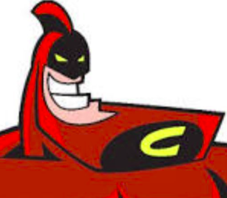

10 votes
7 votes
12 votes
2 votes
KAHOOT RANKING
JOÃOZINHO
3
MARIA
5
ZELAVA
1
Initial Commit
"macete"
Para criar os arquivos core de cada projeto novo, depois de acessar a pasta do projeto, utilizo no terminal code . index.html script.js style.css e o VScode já inicia com os arquivos abertos.
Espaçamento
"boas práticas"
Ao invez de margin e padding, flex e gap podem ser usados no elemento pai para setar o espaçamento entre os elementos filhos.
Espaçamento
"boas práticas"
Utilizem flex e gap no elemento pai para setar o espaçamento entre os elementos filhos.
Ícones
"conteúdo"
Alguns sites permitam importação de ícones em SVG. Estes ícones são vetorizados, não perdem qualidade quando esticados e podem ser customizados como se fossem texto. Sites exemplo: BOXICONS, FONTAWESOME, FLATICON